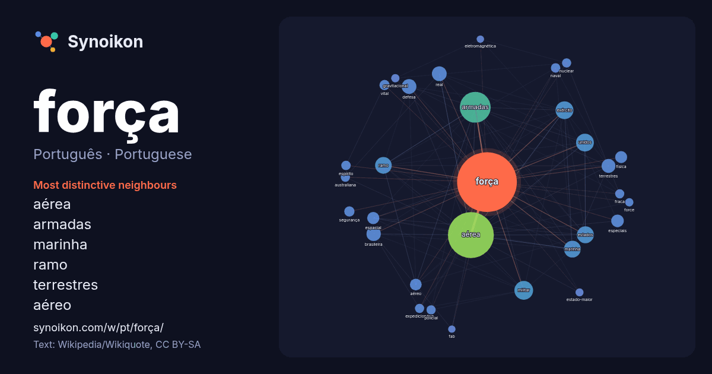

Português · Portuguese · popular word
força
“strength” · The words found around it in 1538 instances from Portuguese Wikipedia, Wikiquote.

Most distinctive neighbours
- aérea 252×
- armadas 133×
- marinha 36×
- ramo 36×
- terrestres 30×
- aéreo 24×
- defesa 24×
- especiais 23×
- espacial 23×
- exército 22×
- militar 21×
- vital 20×
- física 19×
- expedicionária 18×
- real 17×
- fraca 17×
- australiana 16×
- naval 15×
- policial 14×
- gravitacional 14×
× = how many times more often than in general Portuguese Wikipedia text.
Most frequent neighbours
- aérea 426
- armadas 192
- militar 71
- exército 64
- unidos 64
- estados 58
- marinha 57
- ramo 56
- defesa 44
- real 44
- brasileira 42
- terrestres 39
- especiais 32
- espacial 30
- física 29
- aéreo 28
- país 25
- portuguesa 25
- brasil 24
- corpo 21
In context
- significados, veja Força (desambiguação). Na física, uma força é uma ação que pode alterar a velocidade ou a forma de um corpo, opor-se a outras forças ou provocar Wikipedia snippets · Força
- Silva (Porecatu, 25 de janeiro de 1956), conhecido também como Paulinho da Força, é um metalúrgico, sindicalista e político brasileiro filiado ao Solidariedade Wikipedia snippets · Paulinho da Força
- foram fundidos em uma força militar única. Ambos os ramos de ar transferiram seus equipamentos, instalações e pessoal para a nova força armada. Formalmente Wikipedia snippets · Força Aérea Brasileira
- A Força do Querer é uma telenovela brasileira produzida e exibida pela TV Globo de 3 de abril a 20 de outubro de 2017, em 172 capítulos. Substituiu A Wikipedia snippets · A Força do Querer
- militares do Departamento de Defesa. A Força Aérea, através do Departamento da Força Aérea, é chefiada pelo Secretário da Força Aérea dos Estados Unidos, que se Wikipedia snippets · Força Aérea dos Estados Unidos
- (desambiguação). A Força Aérea Real ou Real Força Aérea (em inglês: Royal Air Force; RAF) é o braço aéreo das Forças Armadas do Reino Unido. É a força aérea independente Wikipedia snippets · Força Aérea Real
- Força Expedicionária Brasileira (FEB), identificada pelo distintivo da cobra fumante, foi uma divisão militar do Exército e da Força Aérea Brasileira que Wikipedia snippets · Força Expedicionária Brasileira
- num ramo independente denominado Força Aérea Portuguesa. Este ramo tem como comandante o Chefe do Estado-Maior da Força Aérea (CEMFA), principal colaborador Wikipedia snippets · Força Aérea Portuguesa
More Portuguese words
- arte
- ciência
- clima
- comida
- coração
- cão
- deus
- dinheiro
- família
- gato
- história
- língua
- morte
- natureza
- ouro
- ponte
- saúde
- trabalho
- trem
- verdade
- vida
- água
Precomputed on 2026-10-09 with default settings (±5 words, medium corpus). The interactive map can refresh it with live data.